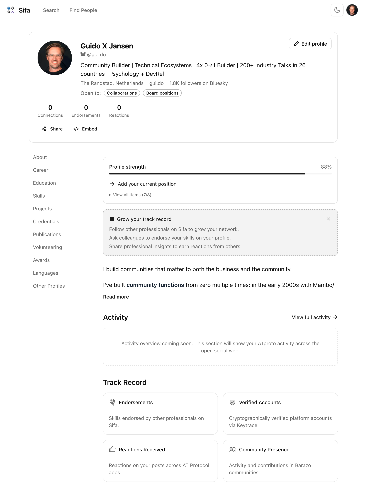

Your profile shows what you actually did. Verified.
Sifa is a professional identity layer for the AT Protocol. Sign in with your Bluesky account, import your LinkedIn history if you want, and you have a public profile at sifa.id. Your data lives in your own AT Protocol repository, not on our servers.
Sifa is in open alpha. Profiles and LinkedIn import work today. We're adding more and building in public.

Your Bluesky posts already appear as your activity feed. Import your LinkedIn history in your browser (the data never leaves your device, it goes straight to your PDS, your personal data server on the AT Protocol). As more AT Protocol apps come online and Barazo communities grow, that real activity shows up on your profile too. Verified against your cryptographic identity, not self-reported.
Social networks are filling up with AI-generated content and self-reported credentials. Sifa goes the other way: your profile shows real activity from real communities, tied to a cryptographic identity that can't be faked.
No reputation numbers. No tiers. No leaderboards. Just: here's what you did, verified.
Professional networks built on self-reported credentials are hitting a wall. Endorsements mean nothing. Feeds are drowning in AI-generated content. Ghost job listings waste people's time. And when those platforms get fined hundreds of millions for privacy violations or leak billions of records, users can't do anything about it because their professional identity is locked inside.
The alternatives that tried to fix this shut down in early 2025 (Read.cv, Polywork). The demand is real, but centralized models break. Your professional profile shouldn't disappear when a company runs out of funding. On Sifa it can't: your data lives in your PDS, not on our servers.
The AT Protocol ecosystem is now large enough to build on. 25 million people already have an identity on the protocol. The developer tooling matured in early 2026. And nobody has published professional networking schemas for it yet. Sifa is first.
"I got tired of a professional network where the most visible signal is whether you've paid for a premium subscription. Your track record should speak for itself."
— Guido Jansen, founder
The trust infrastructure (sybil detection, anti-abuse labels) is being built as a public labeler that any AT Protocol app can plug into. The point is protecting communities, not ranking people.
And as the network grows: an organization looking for Kubernetes expertise will be able to find people with actual, verified activity in Kubernetes communities, not someone who typed a keyword on their profile. Trusted expertise discovery based on what people actually did, that's what we're building toward.
Sifa is one of two products from Singi Labs, built by Guido Jansen in the Netherlands. Its sibling Barazo is a federated forum platform on the AT Protocol. The two feed into each other: activity in Barazo communities will appear as verified contributions on your Sifa profile, and Sifa's trust labels will help keep Barazo communities safe.
Open source lexicons (MIT). Based in the EU, built for anywhere.